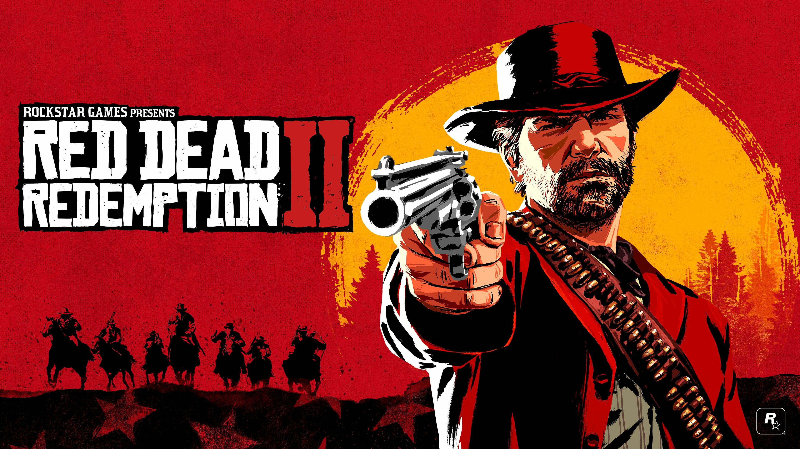
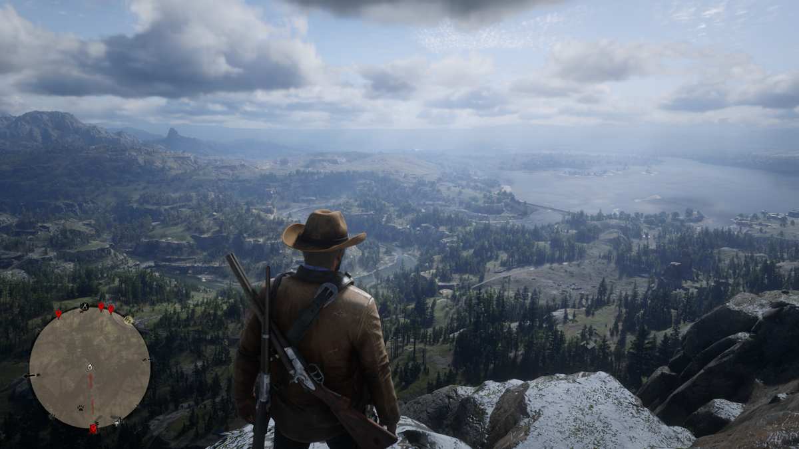

Publishing Info
- Publisher: Rockstar Games, Inc.
-
Developers:
- Rockstar Games Toronto ULC
- Rockstar Interactive India LLP
- Rockstar Leeds Ltd.
- Rockstar New England
- Rockstar North Ltd.
- Rockstar San Diego, Inc.
- Rockstar London Ltd.
- Release Date: October, 2018
Description
After a robbery goes badly wrong in the western town of Blackwater, Arthur Morgan and the Van der Linde gang are forced to flee. With federal agents and the best bounty hunters in the nation massing on their heels, the gang must rob, steal and fight their way across the rugged heartland of America in order to survive. As deepening internal divisions threaten to tear the gang apart, Arthur must make a choice between his own ideals and loyalty to the gang who raised him.
From the creators of Grand Theft Auto V and Red Dead Redemption, Red Dead Redemption 2 is an epic tale of life in America at the dawn of the modern age.
Categories
- Genre: Action
- Perspective: First-Person/ Behind View
- Gameplay: Open World
- Setting: Western; North America
- Narrative: Crime
Quote
"Red Dead Redemption 2's stark, slow depiction of America's fading frontier is a monumental work straining against stubborn mission design and stability problems."
-- PC Gamer,
https://www.mobygames.com/game/115902/red-dead-redemption-ii/reviews/windows/#